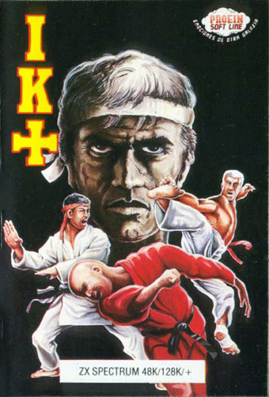
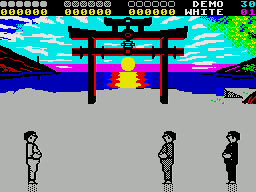
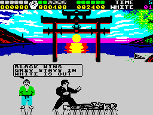

IK+


{kind=link}

| Publisher: | System 3 |
| Price: | £9.99 |
| Year: | 1987 |
| Source: | CRASH, Issue 49 |

Two years after the appearance of the original, a sequel to System 3’s International Karate (68% in Issue 24) has arrived. The imaginatively-named IK+ again features a two-player option, but this time there’s a trio of new moves, a remixed Rob Hubbard soundtrack and a new approach to the gameplay.
Press FIRE and the action begins with the appearance of three players — one controlled by the player and the other two computer-controlled (or, in two-player mode, two controlled by players and one by the computer). A free-for-all ensues, with each combat- ant attempting to knock down either opponent. The player has 14 different moves accessible via the joystick in conjunction with FIRE, including a double kick, head butt, back flip, front punch and high kick.

Points are awarded to a fighter who knocks down an opponent with a successful kick or punch — one point for a reasonable knock-out and two for a particularly good job. The objective is to score five points before the others, or to score the highest within the 30-second time limit.
If a fighter scores five points, his time remaining is turned into bonus points. The second-highest scorer goes through to the next round, and for the lowest scorer it’s game over. If no players score five, the two highest scorers progress.
The action starts on white-belt level, and progresses through yellow to green, purple and finally black. The levels get progressively more difficult, with black-belt level requiring fast reflexes to survive.
When every third level is completed there’s a chance to increase score on a bonus screen. The fighter appears in the centre of the screen and is armed with a defensive shield. Balls bounce into the screen from either side and are deflected to increase the score. 100 are given for each ball deflected, with their speed increasing in velocity till one knocks over the combatant, whereupon the next level is tackled.
CRITICISM

“IK+ is definitely the best fighting game on the Spectrum. I’ve been playing it for two days solidly without a sign of boredom (admittedly I’m still on purple belt!). The graphics are quite pretty; the men are the same as The Way Of The Exploding Fist’s, years ago, but the colours and animations of the background are very good. The music is very subdued, even on the 128K machines, but it’s an excellent tune, and though the spot FX are somewhat unatmospheric (they sound more like slaps than flying double face kicks), IK+ zips along at a terrifically addictive pace.”
MIKE ... 94%
“IK+ is a vast improvement on its predecessor. It’s very professionally designed in all aspects, particularly in the graphics department. The beautifully varied rippling-water effects and setting sun are complemented by the smoothly-animated, fast-moving characters, leaping and flipping around the screen in barely-restrained chaos. It is just easy enough to lull you into a false sense of security, just difficult enough to reward you with a kick in the face. The onscreen presentation is clear and informative, with many lighter touches and a more relaxing (!) bonus screen to offset the manic kicking and punching. You also get a long list of options (the two-player mode is great) and a neat booklet. Add to this an extensive high-score table, and you have one of the most professional and action-packed beat-’em-ups on the Spectrum.”
NICK ... 90%
“You may have thought The Way Of The Exploding Fist was addictive with its one-on-one combat, but when you throw in another computer-controlled character the urge to bash even more people to the ground is immense. And IK+’s improvements on International Karate are obvious — gone is the flickery animation, and in its place is a wide range of well-executed moves; gone is the tacky speech synthesis, replaced with a superb soundtrack and effects. But where IK+ scores so highly over the competition is in the amount of action. You’ve got to keep an eye on two opponents, and the bonus screen requires skilled hand-eye coordination. This is the martial-arts game to go for.”
PAUL ... 94%
COMMENTS
| Joystick: | Cursor, Kempston, Sinclair |
| Graphics: | Only one background (complete with rippling river), but the animation of all three participants is amazingly fast, accurate and smooth |
| Sound: | Excellent Rob Hubbard remix on 128K; 48K effects also add to the atmosphere |
| Options: | One or two players |
| General rating: | Vastly better than all other beat-’em-ups — even The Way Of The Exploding Fist. The one-player game is as addictive and playable as the two-player, which makes for long-lasting appeal. |
| Presentation: | 90% |
| Graphics: | 90% |
| Playability: | 92% |
| Addictive qualities: | 92% |
| Overall: | 91% |